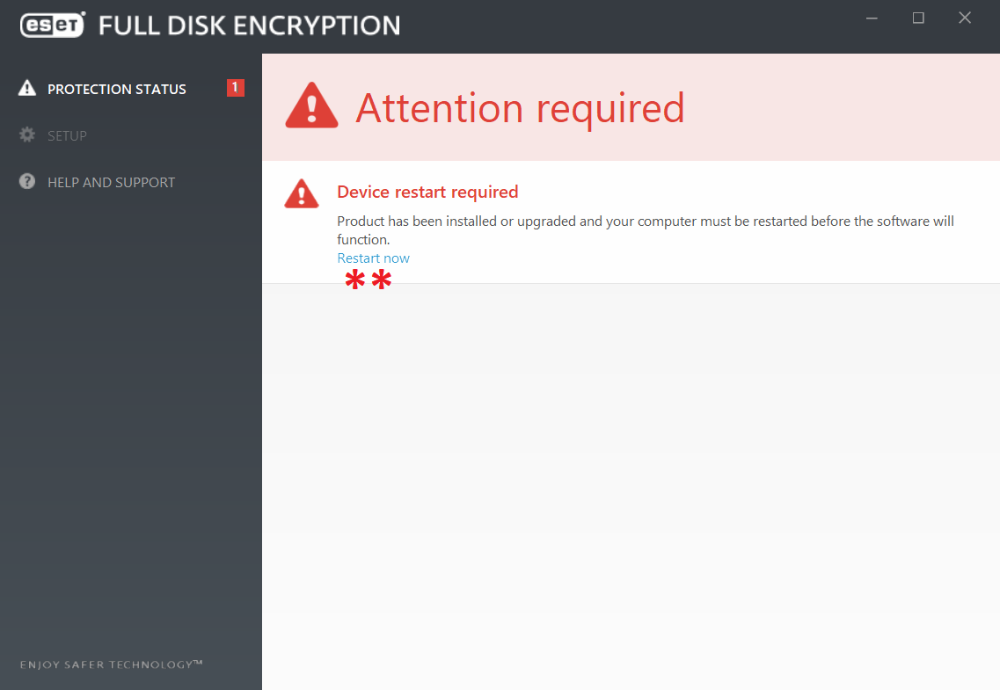

ESET || إي إس إي تي
الاسم: إي إس إي تي
المهمة: أنتي فايروس أو مضاد فايروسات لحماية البيانات من البرمجيات الخبيثة
أنظمة التشغيل المتاح عليها: ويندوز وماك
الثمن: مدفوع، يتم توفيره مجانا للعاملين في المركز السوري للإعلام وحرية التعبير

كيف يعمل؟
برنامج الـESET هو برنامج أنتي فايروس لحماية البيانات من البرمجيات الخبيثة. يقوم أيضاً بتشفير البيانات من أجل حمايتها من الاختراق ويتيح خيارات عدة لحماية بيانات المستخدم والبطاقات البنكيه والهوية.
يتكون هذا الدليل من ثلاثة أقسام رئيسية :
1- تنصيب برنامج إي إس إي تي
يقوم المركز السوري للإعلام وحرية التعبير بتوفير نسخ مجانية من البرنامج عن طريق إرسال رابط يحتوي على البرنامج، نقوم بتنزيله على جهازنا الخاص
- بعد إتمام تحميل البرنامج على جهازنا الخاص، نقوم بفتحه فتظهر النافذة التالية:
- نضغط على "Continue" لبدء عملية التنزيل

- تبدأ عملية التنصيب كما في النافذة التالية:

- بعد الانتهاء عملية تنصيب البرنامج تظهر النافذة التالية: وتعني أنه تم تنصيب البرنامج بنجاح

- قد تظهر النافذة التالية وهي طلب لإعادة تشغيل الجهاز الخاص بنا، من الأفضل أن نقوم بهذه الخطوة
 - بعد إعادة تشغيل الجهاز الخاص بنا، نقوم بالبحث عن "eset" في مكان البحث بجانب قائمة إبدأ في شريط
المهام
- نقوم بفتح برنامج "ESET Endpoint Security"

- عند فتح البرنامج تظهر النافذة التالية: وفيها معلومات عن التحديثات الخاصة بالبرنامج وتاريخ انتهاء
رخصته
- نفتح قائمة "Computer Scan" لتظهر النافذة التالية:
- "Scan your computer": لفححص جميع محتويات جهاز الكمبيوتر
- "Custom scan": لفحص أجزاء معينة في الجهاز
- "Removable media scan": إذا أردنا أن نقوم بفحص هارد أو أي جهاز خارجي، نقوم بتوصيله بالكمبيوتر ليتم تفعيل هذا الخيار ونقوم بعملية الفحص
- "Repeat last scan": لإعادة آخر عملية فحص تمت على هذا الجهاز

- عند اختيار "Custom scan" في الخطوة السابقة، تظهر النافذة التالية:
- نقوم باختيار الأجزاء أو الأقراص التي نريد فحصها
- نضغط على "Scan" لبدء عملية الفحص
- إذا كان الحساب الخاص بنا على جهاز الكمبيوتر هو حساب الأدمن فيمكننا أن نضغط على "Scan as Adminstrator"